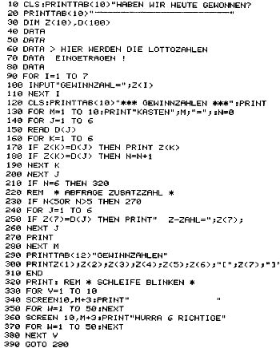
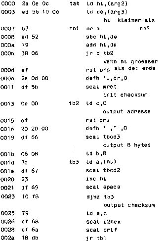

Nascom Journal |
Januar 1982 · Ausgabe 1 |
Folgendes Programm vergleicht die Tippzahlen mit den Gewinnzahlen im Lotto. Nach Eingabe der Gewinnzahlen wird angezeigt, ob man und wie man gewonnen hat. Zu sagen ist nicht viel, das kurze Programm erklärt sich von selbst. Ich habe es mal gemacht, weil ich zu bequem war, die Zahlen immer zu vergleichen. Die Daten in Zeile 40 – 80 enthalten die getippten Zahlen vom Lottoschein und in Zeile 130 ist in der FOR/NEXT Schleife die Anzahl der getippten Kästchen einzusetzen.
Dieses Programm gibt einen definierten Speicherbereich mit Prüfsummen aus. Es ist vor allem für die Benutzer von Nassys 3 gedacht, weil in diesem Betriebssystem vom „T“-Befehl keine Prüfsummen mehr ausgegeben werden. Es läuft aber auch unter Nassys 1, dadurch kann man auch direkt vom Schirm die Prüfsummen ablesen. Das Programm ist voll verschiebbar.
| Start des Programms: | ||||
| E | AAAA | SSSS | EEEE | |
| AAAA: | Startadress des Tab-Programms | |||
| SSSS: | Beginn des | |||
| EEEE: | Ende des } Speicherbereiches | |||

| Seite 7 von 35 |
|---|